WAP11 version 2.6: Linksys Router Deconstruction
by Wu and Warner
Block Diagram, Circuit Board, and Bill of Materials
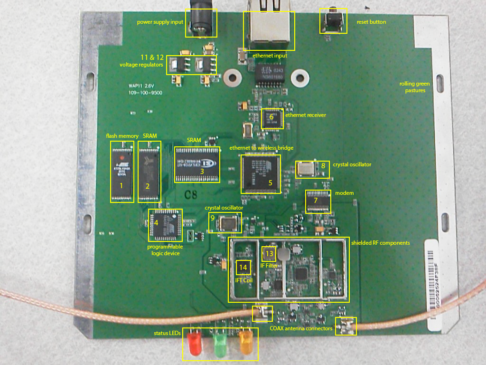
User Manual:
http://downloads.linksys.com/downloads/userguide/WAP11-v2.6_ug,0.pdf
The WAP11 has an FCC ID of O7JGL2411AP. Searching the authorized equipment database provided by the FCC's Office of Engineering and Technology, we were able to find full documentation of the router.
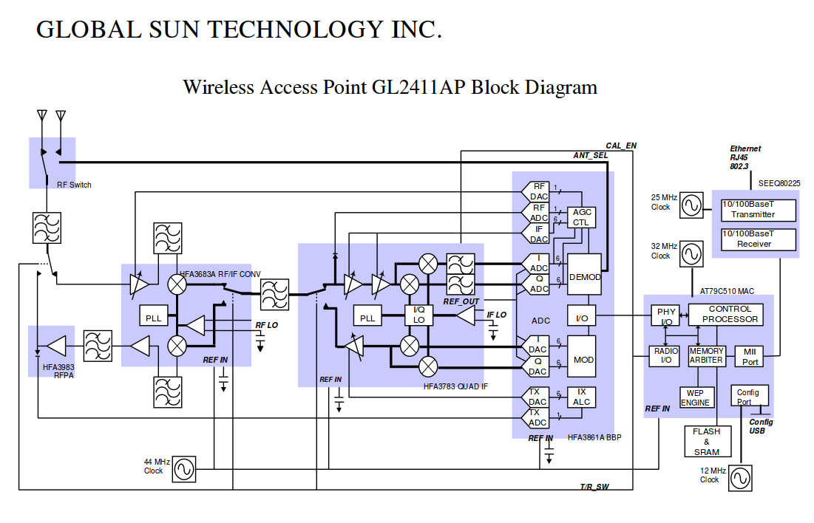
Link to all FCC documentationMechanical notes:
The shell of the router is composed of injection molded thermoplastic. This decision is the logical choice for a cheap, high volume unit such as a home router. The components can be made extremely cheaply while still thoroughly protecting the circuit board within. A matrix of vent holes exists on the top of the router case, presumably in order to enable passive cooling via natural convection. Perplexingly, it appears as though only half the number of screws were actually installed. While two holes existed for screws underneath the rubber feet, only one was installed. And again, while two holes existed for screws to mount the circuit board to the baseplate, only one screw was ever actually installed. This theory is supported by the intact warranty label and the fact that threads were never cut by the self threading screws into the plastic bosses accepting the screws. However, the mechanical robustness did not appear to be compromised as a result.
All connectors that the user might interface with, including the ethernet port, power supply connector, reset button, and coax connectors were all firmly secured. The coax connectors going to the antennas, for example, are secured with nuts and lock washers to the plastic case. Unlike all other components on the board, which are surface mounted, the connectors are all soldered through the board, giving more mechanical durability.
Functional Operation Verification
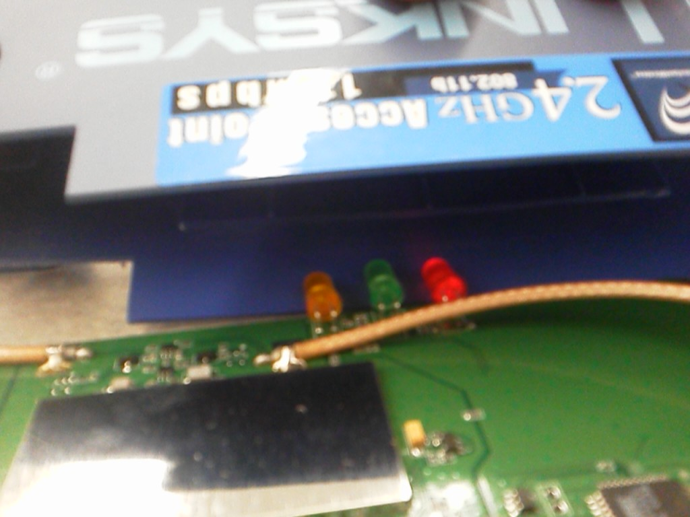
As shown by powered red LED in this blurry photo, the router was operational at the time of deconstruction. LED indicators and recognition of Wifi network by computer prove that unit does at least power on and fulfill minimum functions.
Disassembly Process
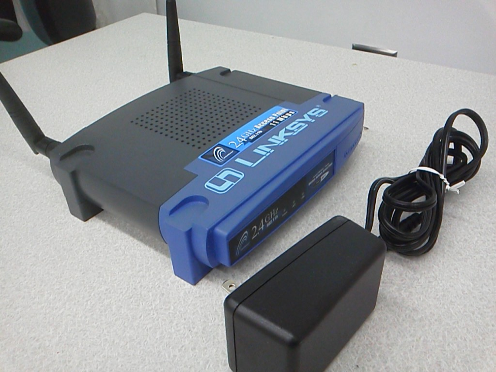
Figure 1. The router fully intact, consisting of wo antennas, power supply, and main unit.
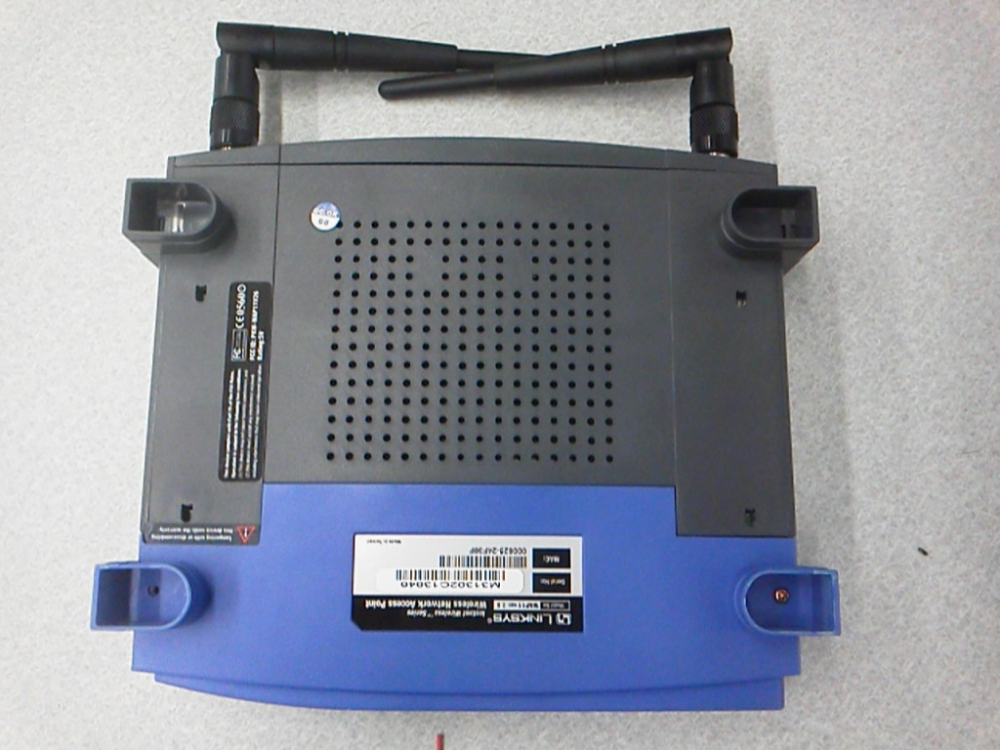
Figure 2. The bottom of the router with rubber feet removed. Note there is only one screw in place. Initially this was thought to be the result of a previous deconstruction, but upon further investigation, it appears as though no screw was ever bolted in place. The unit is designed to allow the screws to self thread into the thermoplastic. However, no such threads can be observed in the other foot.
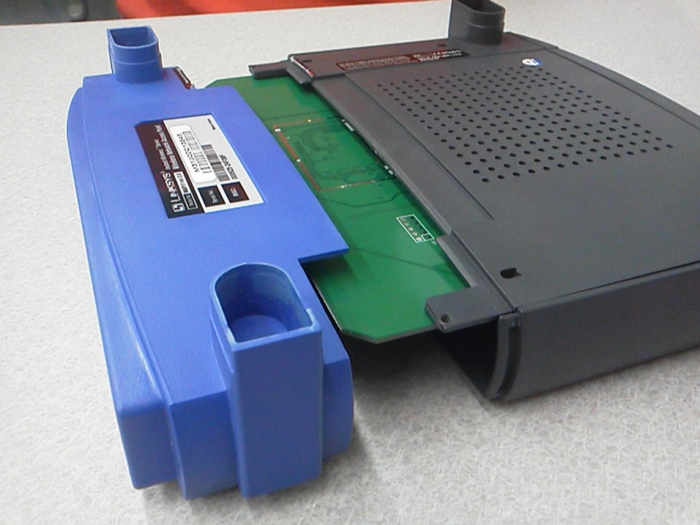
Figure 3. With the Phillips head screw removed, the front face can be separated from the main body, exposing the circuit board.
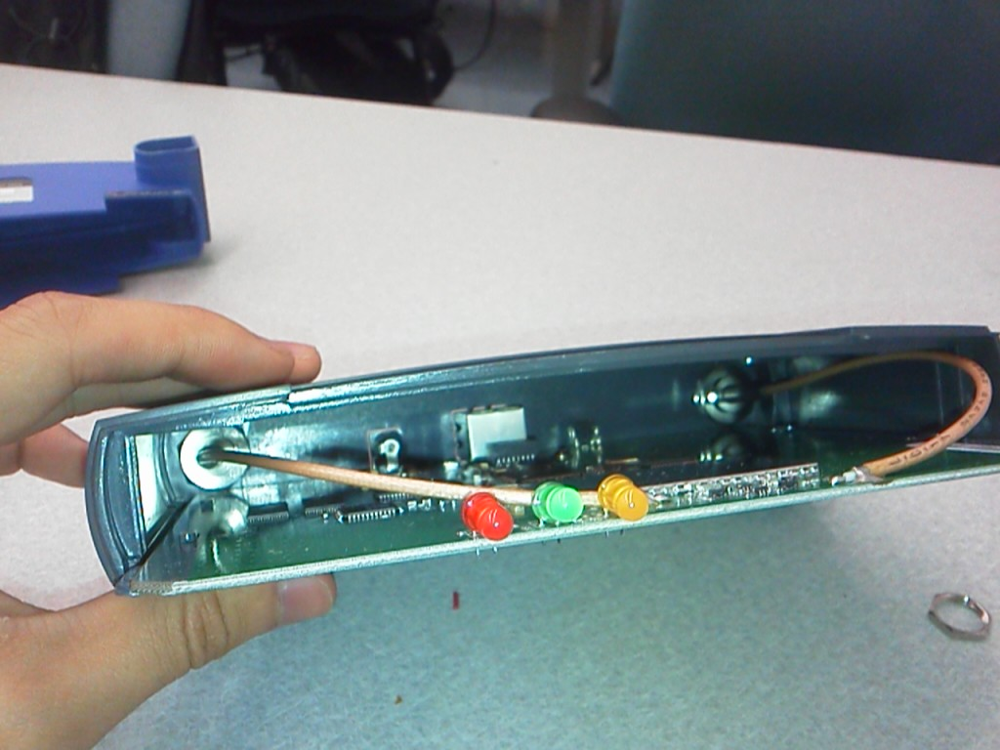
Figure 4. The circuit board is exposed, but not yet free. The coaxial connector cables restrain the board in the plastic case.
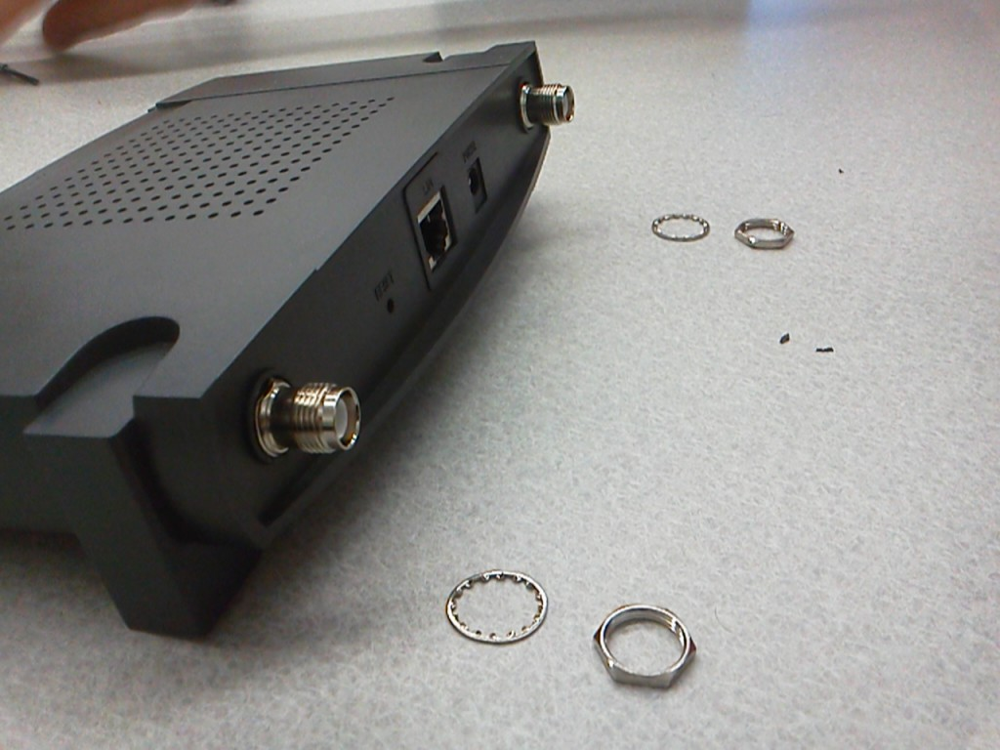
Figure 5. Next, the coaxial connectors need to be removed. A nut and lock washer securely retain each connector.
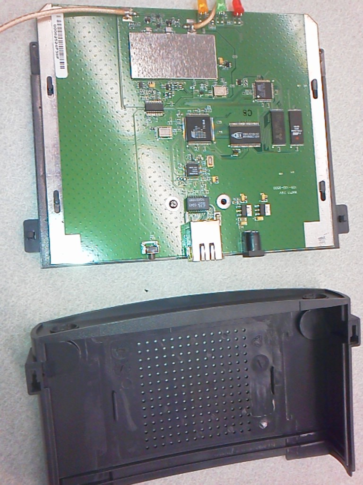
Figure 6. The top plastic cover is popped off from the baseplate and circuit board. A single screw can be seen near the ethernet connector retaining the circuit board to the plastic baseplate. Another hole appears to exist for a screw to retain the board, but upon inspection, no threads have been initiated by a screw, indicating that it was never installed.
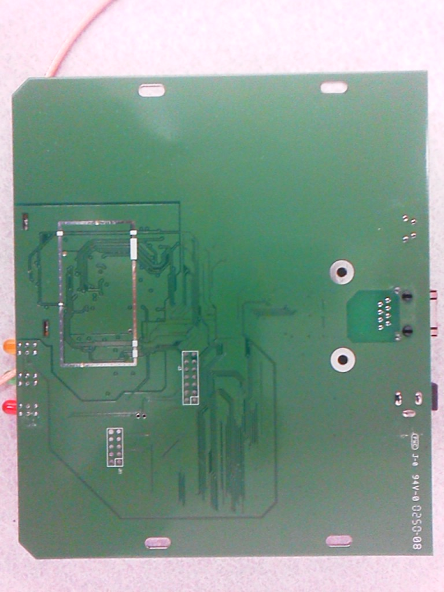
Figure 7. The bottom of the circuit board.
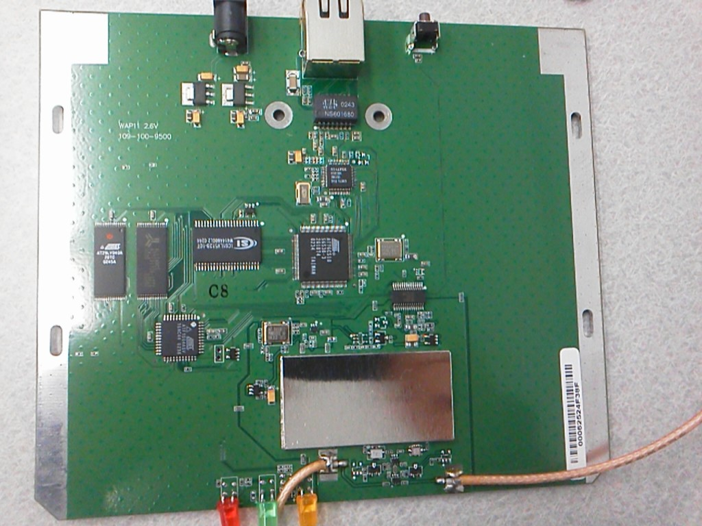
Figure 8. Top of the circuit board with aluminum sheet metal shield over RF components.
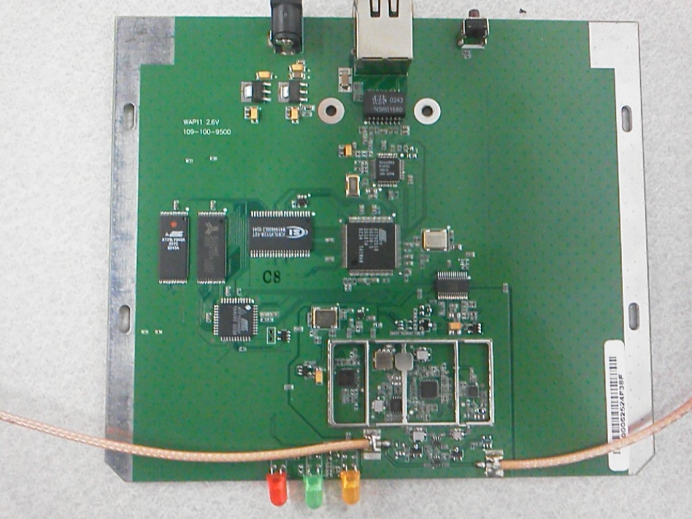
Figure 8. The top of the board with shield removed. The shield was removed by simply prying off the cover, which was held on with a simple press fit.